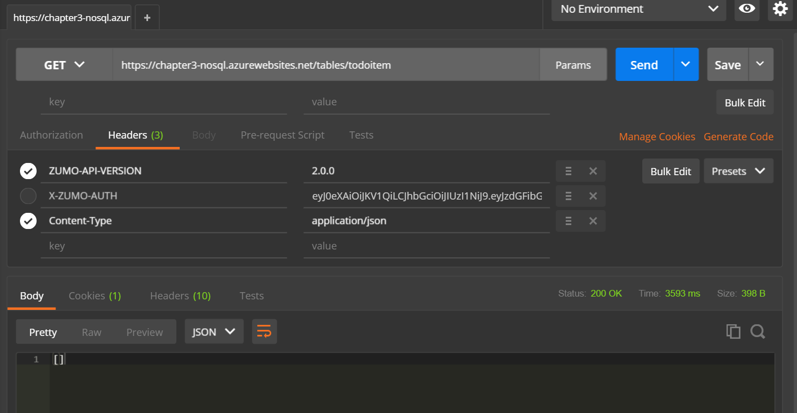
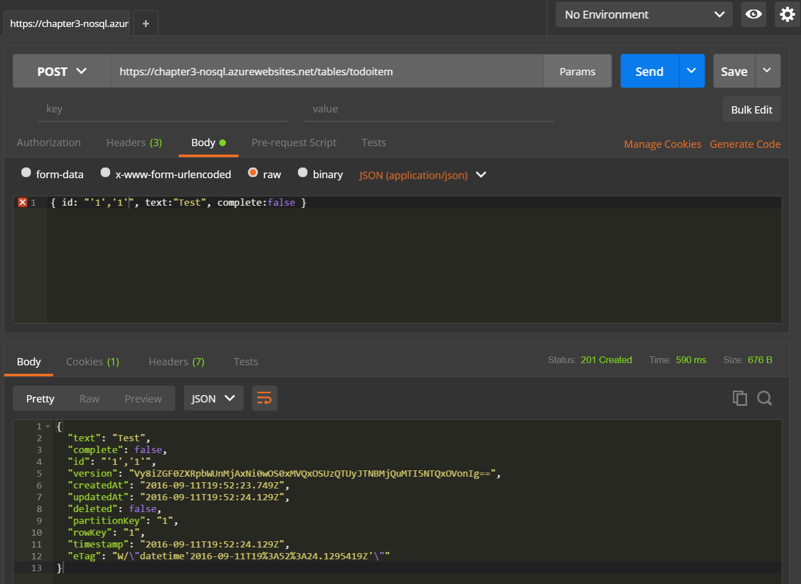
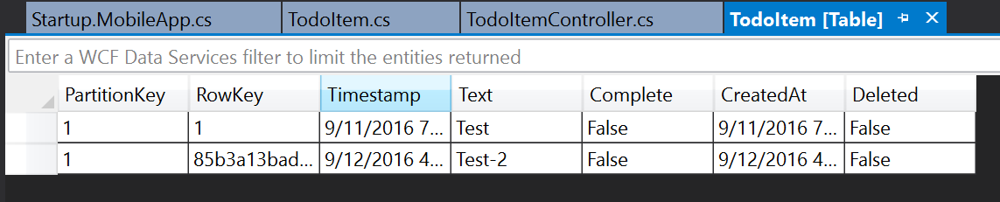
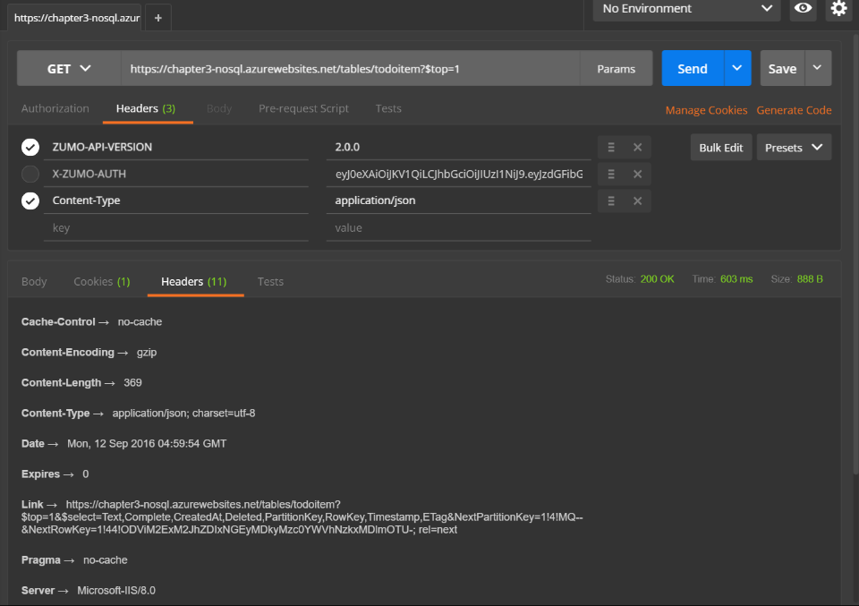

The Domain Manager¶
As a request comes in to the mobile backend, it is processed through several layers. First, ASP.NET
processes the request, handling things like Authentication and Authorization. It is then processed
through the Microsoft.Web.Http.OData controller, which compiles the requested query. Then it is
passed to the Domain Manager, which is responsible for converting the request into a response. The
response is then passed back up the stack to be finally given back to the mobile client.
The Domain Manager is a central part of this process. It is a class that implements the IDomainManager
interface:
namespace Microsoft.Azure.Mobile.Server.Tables
{
public interface IDomainManager<TData> where TData : class, ITableData
{
IQueryable<TData> Query();
SingleResult<TData> Lookup(string id);
Task<IEnumerable<TData>> QueryAsync(ODataQueryOptions query);
Task<SingleResult<TData>> LookupAsync(string id);
Task<TData> InsertAsync(TData data);
Task<TData> UpdateAsync(string id, Delta<TData> patch);
Task<TData> ReplaceAsync(string id, TData data);
Task<bool> DeleteAsync(string id);
}
}
This looks deceptively simple. Just 8 methods. In reality, this is anything but simple. The major issue
that a prospective domain manager implementor has to grapple with is the translation of an IQueryable into
something that the backend data source can understand.
Let's take a look at a couple of domain managers that solve specific problems that crop up from time to time during development. It should be noted that NEITHER of these domain managers are recommended as a generalized solution. They both have significant caveats to their use and you should understand those caveats before embarking on integrating them.
Existing Table Relationships with the MappedEntityDomainManager¶
One of the key areas that is weak when using the default EntityDomainManager is handling existing tables. The
generally accepted method of dealing with relationships is through loose coupling and manual relationship management
in the client. Relationships are core to the SQL database world and we sometimes want to project those relationships
into the mobile client, allowing the backend to preserve any relationships that have been configured while still
using the standard offline client capabilities. If you have existing SQL relationships, you can use a combination
of AutoMapper and the MappedEntityDomainManager.
The MappedEntityDomainManager is an abstract IDomainManager implementation targetting SQL as the backend store where
there is not a 1:1 mapping between the data object (DTO) exposed through the TableController and the domain model managed
by Entity Framework. If there is a 1:1 mapping, use EntityDomainManager. The MappedEntityDomainManager uses
AutoMapper to map between the DTO and the domain model. It assumes that AutoMapper has already been initialized with
appropriate mappings that map from DTO to domain model and from the domain model to the DTO.
Let's take a small example. If I am producing an enterprise mobile app that field engineers can use - the ones that, for example, visit your house to install cable. I can define an Entity Framework model map as follows:
[Table("Customers")]
public class Customer
{
public Customer()
{
this.Jobs = new HashSet<Job>();
}
[StringLength(50)]
public string Id { get; set; }
[StringLength(50)]
public string FullName { get; set; }
[StringLength(250)]
public string Address { get; set;
public decimal? Latitude { get; set; }
public decimal? Longitude { get; set; }
public ICollection<Job> Jobs { get; set; }
}
[Table("Equipment")]
public class Equipment : ITableData
{
public Equipment()
{
this.Jobs = new HashSet<Job>();
}
[StringLength(50)]
public string Name { get; set; }
[StringLength(28)]
public string Asset { get; set; }
[StringLength(250)]
public string Description { get; set; }
#region ITableData
public DateTimeOffset? CreatedAt { get; set; }
public bool Deleted { get; set; }
[DatabaseGenerated(DatabaseGeneratedOption.Computed)]
public DateTimeOffset? UpdatedAt { get; set; }
[Timestamp]
public byte[] Version { get; set; }
#endregion
public ICollection<Job> Jobs { get; set; }
}
[Table("Jobs")]
public class Job : ITableData
{
public Job()
{
this.Equipments = new HashSet<Equipment>();
}
[StringLength(50)]
public string CustomerId { get; set; }
[StringLength(50)]
public string AgentId { get; set; }
public DateTimeOffset? StartTime { get; set; }
public DateTimeOffset? EndTime { get; set; }
[StringLength(50)]
public string Status { get; set; }
[StringLength(250)]
public string Description { get; set; }
#region ITableData
public DateTimeOffset? CreatedAt { get; set; }
public bool Deleted { get; set; }
[DatabaseGenerated(DatabaseGeneratedOption.Computed)]
public DateTimeOffset? UpdatedAt { get; set; }
[Timestamp]
public byte[] Version { get; set; }
#endregion
public ICollection<Equipment> Equipments { get; set; }
}
This is the representation of the tables within the database. They don't have to map to what the client
requires. We can wire up the relationships in the normal Entity Framework way, within the DbContext:
public partial class ExistingDbContext : DbContext
{
public FieldDbContext() : base("name=MS_TableConnectionString")
{
}
public virtual DbSet<Customer> Customers { get; set; }
public virtual DbSet<Equipment> Equipments { get; set; }
public virtual DbSet<Job> Jobs { get; set; }
protected override void OnModelCreating(DbModelBuilder modelBuilder)
{
modelBuilder.HasDefaultSchema("dbo");
modelBuilder.Conventions.Add(
new AttributeToColumnAnnotationConvention<TableColumnAttribute, string>(
"ServiceTableColumn", (property, attributes) => attributes.Single().ColumnType.ToString()));
modelBuilder.Entity<Customer>().Property(e => e.Address).IsUnicode(false);
modelBuilder.Entity<Customer>().Property(e => e.FullName).IsUnicode(false);
modelBuilder.Entity<Customer>().Property(e => e.Id).IsUnicode(false);
modelBuilder.Entity<Customer>().Property(e => e.Latitude).HasPrecision(9, 6);
modelBuilder.Entity<Customer>().Property(e => e.Longitude).HasPrecision(9, 6);
modelBuilder.Entity<Equipment>().Property(e => e.Asset).IsUnicode(false);
modelBuilder.Entity<Equipment>().Property(e => e.Description).IsUnicode(false);
modelBuilder.Entity<Equipment>().Property(e => e.Name).IsUnicode(false);
modelBuilder.Entity<Equipment>().Property(e => e.Id).IsUnicode(false);
modelBuilder.Entity<Job>().Property(e => e.CustomerId).IsUnicode(false);
modelBuilder.Entity<Job>().Property(e => e.AgentId).IsUnicode(false);
modelBuilder.Entity<Job>().Property(e => e.Id).IsUnicode(false);
modelBuilder.Entity<Job>().Property(e => e.Status).IsUnicode(false);
modelBuilder.Entity<Job>().Property(e => e.Description).IsUnicode(false);
modelBuilder.Entity<Equipment>()
.HasMany(e => e.Jobs)
.WithMany(e => e.Equipments)
.Map(m => m.ToTable("EquipmentIds").MapLeftKey("EquipmentId").MapRightKey("JobId"));
}
}
We can see the relationship (a Many:Many relationship) at the end of the modelBuilder within
the DbContext. The 1:Many and 1:1 relationships are handled within the models themselves, per the
normal Entity Framework methods. This is pure Entity Framework thus far - we have defined the
structure of the database.
To translate this into a mobile client, we need to define Data Transfer Objects. These don't have to be the same shape as the models that Entity Framework is using. For example:
public class CustomerDTO
{
public string FullName { get; set; }
public string Address { get; set;
public decimal? Latitude { get; set; }
public decimal? Longitude { get; set; }
}
public class EquipmentDTO
{
public string Name { get; set; }
public string Asset { get; set; }
public string Description { get; set; }
}
public class JobDTO : EntityData
{
public string AgentId { get; set; }
public DateTimeOffset? StartTime { get; set; }
public DateTimeOffset? EndTime { get; set; }
public string Status { get; set; }
public string Description { get; set; }
public virtual CustomerDTO Customer { get; set; }
public virtual List<EquipmentDTO> Equipments { get; set; }
}
Note that the DTOs are similar, but definitely not the same. They don't have the same relationships between
the records, for example. MappedEntityDomainManager requires that AutoMapper is already configured and
initialized, so that's the next step. Set up an AutoMapper configuration in the App_Start directory:
using AutoMapper;
using FieldEngineer.Service.DataObjects;
using FieldEngineer.Service.Models;
namespace FieldEngineer.Service
{
public class AutomapperConfiguration
{
public static void CreateMapping(IConfiguration cfg)
{
// Apply some name changes from the entity to the DTO
cfg.CreateMap<Job, JobDTO>()
.ForMember(jobDTO => jobDTO.Equipments, map => map.MapFrom(job => job.Equipments));
// For incoming requests, ignore the relationships
cfg.CreateMap<JobDTO, Job>()
.ForMember(job => job.Customer, map => map.Ignore())
.ForMember(job => job.Equipments, map => map.Ignore());
cfg.CreateMap<Customer, CustomerDTO>();
cfg.CreateMap<Equipment, EquipmentDTO>();
}
}
}
You will also need to initialize the AutoMapper - this can be done where you also configure the Azure Mobile Apps:
using System;
using System.Web.Http;
using AutoMapper;
using Microsoft.WindowsAzure.Mobile.Service;
namespace FieldEngineer.Service
{
public static class WebApiConfig
{
public static void Register()
{
// Use this class to set configuration options for your mobile service
ConfigOptions options = new ConfigOptions();
// Use this class to set WebAPI configuration options
HttpConfiguration config = ServiceConfig.Initialize(new ConfigBuilder(options));
// To display errors in the browser during development, uncomment the following
// line. Comment it out again when you deploy your service for production use.
config.IncludeErrorDetailPolicy = IncludeErrorDetailPolicy.Always;
// This is the line that initializes AutoMapper
Mapper.Initialize(cfg => { AutomapperConfiguration.CreateMapping(cfg); });
}
}
}
Finally, we can create a controller that allows the receipt and update of jobs:
namespace FieldEngineer.Service.Controllers
{
[Authorize]
public class JobController : TableController<JobDTO>
{
private FieldDbContext context;
protected override void Initialize(HttpControllerContext controllerContext)
{
base.Initialize(controllerContext);
this.context = new FieldDbContext();
this.DomainManager = new DefaultMappedEntityDomainManager<JobDTO,Job>(this.context, Request, Services);
}
[ExpandProperty("Customer")]
[ExpandProperty("Equipments")]
public async Task<IQueryable<JobDTO>> GetAllJobs()
{
var jobs = this.context.Jobs
.Include("Customer")
.Include("Equipments")
.Project().To<JobDTO>();
return jobs;
}
[ExpandProperty("Customer")]
[ExpandProperty("Equipments")]
public SingleResult<JobDTO> GetJob(string id)
{
return this.Lookup(id);
}
public async Task<JobDTO> PatchJob(string id, Delta<JobDTO> patch)
{
return await this.UpdateAsync(id, patch);
}
}
}
We are using [ExpandProperty] to expand the Customer and Equipment data so that it is transferred with the Job object.
The MappedEntityDomainManager is an abstract type, so we have to create a concrete implementation. Fortunately, most
of the work is done for us. There are already concrete versions of most of the methods we require (like insert, delete
and lookup). The MappedEntityDomainManager needs help to deal with replacements nor optimistic concurrency - features
we want. We can use the DefaultMappedEntityDomainManagerto handle this for us:
namespace FieldEngineerLite.Service.Helpers
{
public class DefaultMappedEntityDomainManager<TData, TModel>
: MappedEntityDomainManager<TData, TModel>
where TData : class, ITableData
where TModel : class, ITableData
{
public DefaultMappedEntityDomainManager(DbContext context, HttpRequestMessage request, ApiServices services)
: base(context, request, services)
{
}
public override Task<bool> DeleteAsync(string id)
{
return this.DeleteItemAsync(id);
}
public override Task<TData> UpdateAsync(string id, Delta<TData> patch)
{
return this.UpdateEntityAsync(patch, id);
}
public override SingleResult<TData> Lookup(string id)
{
return this.LookupEntity(model => model.Id == id);
}
protected override void SetOriginalVersion(TModel model, byte[] version)
{
this.Context.Entry(model).OriginalValues["Version"] = version;
}
}
}
The primary thing that the DefaultMappedEntityDomainManager does that the original doesn't is in the SetOriginalVersion
method. This causes the model to be updated with a new version, allowing for conflict detection in the domain manager.
If we move now to the models on the mobile client, we see some fairly standard models:
public class Customer
{
public string Id { get; set; }
public string FullName { get; set; }
public string Address { get; set;
public decimal? Latitude { get; set; }
public decimal? Longitude { get; set; }
}
public class Equipment
{
public string Id { get; set; }
public string Name { get; set; }
public string Asset { get; set; }
public string Description { get; set; }
}
public class Job
{
public const string CompleteStatus = "Completed";
public const string InProgressStatus = "On Site";
public const string PendingStatus = "Not Started";
public string Id { get; set; }
public string AgentId { get; set; }
public DateTimeOffset? StartTime { get; set; }
public DateTimeOffSet? EndTime { get; set; }
public string Status { get; set; }
public string Description { get; set; }
public Customer Customer { get; set; }
public List<Equipment> Equipments { get; set; }
[Version]
public string Version { get; set; }
}
In this case, we only need to sync the Job table, so we can define it in the InitializeAsync() method on the client:
public async Task InitializeAsync()
{
var store = new MobileServiceSQLiteStore("localdata.db");
store.DefineTable<Job>();
await MobileService.SyncContext.InitializeAsync(store);
}
You can use GetSyncTable<Job>() to get a reference to the table and deal with it as you normally would. I'd expect in this
case that the Customer and Equipment would be handled elsewhere - maybe a separate web application that customer service
agents use, for example.
So, what are the caveats? The first is that the Job, Customer and Equipment data all comes down as one record. This has a side effect of ensuring that the Customer and Equipment data is read-only. You can only update the information in the Job table. This is also a very time consuming process to set up properly. Automapper is known as a fairly picky piece of software to integrate, so extra time must be allotted to make it work correctly.
In the end, I prefer handling tables individually and handling relationship management on the mobile client manually. This causes more code on the mobile client but makes the server much simpler by avoiding most of the complexity of relationships.
NoSQL Storage with the StorageDomainManager¶
What if you don't want to use a SQL backend for your service? Relationships between entities are not that important in the mobile client and Azure Table Storage costs significantly less than SQL Azure. There are always trade-offs between various storage providers. A Domain Manager enables you to swap out the storage for one of your own choosing. Azure Mobile Apps provides a domain manager for Azure Table Storage. Azure Table Storage is Microsoft's NOSQL key/attribute store. It has a schemaless design, which (at least theoretically) enables you to adapt your data models as the application evolves without having to worry about the schema.
To see this in action, let's rework the existing data store (which has tags and todoitems as tables) to use Table Storage. First up, we need to set up a suitable environment. This involves:
- Create a Resource Group
- Create an Azure App Service
- Set up authentication on the Azure App Service
- Create a Storage Account
- Link the Storage Account to the Azure App Service.
We've already covered the first three items in previous chapters. The important element here is that we do not create a SQL database. We are going to be using Table Storage instead so we don't need it. To create a Storage Account:
- Log on to the Azure portal.
- Click the big + NEW button in the top left corner.
- Click Data + Storage, then Storage account.
- Fill in the form:
- The name can only contain letters and numbers and must be unique. A GUID without the dashes is a good choice.
- The Deployment model should be set to Resource manager.
- The Account kind should be set to General purpose.
- The Performance should be set to Standard for this example.
- The Replication should be set to Locally-redundant storage (LRS).
- Set the Resource group to your existing resource group.
- Set the Location to the same location as your App Service.
- Click Create.
Just like SQL Azure, Azure Storage has some great scalability and redundancy features if your backend takes advantage of them. We have selected the slowest performance and least redundant options here to keep the cost down on your service.
Warn
There is no "free" option for Azure Storage. You pay by the kilobyte depending on the performance and redundancy selected.
Once the Azure Storage account is deployed, you can link the storage account to your App Service:
- Open your App Service in the Azure portal.
- Click Data Connections under the MOBILE section in the settings menu.
- Click + ADD
- In the Add data connection blade:
- Set the Type to Storage.
- Click the Storage link.
- In the Storage Account selector, click the storage account you just created.
- Click the Connection string.
- In the Connection string selector, make a note of the Name field.
- Click OK.
- Click OK to close the Add data connection blade.
Click on the Application Settings menu option, then scroll down to the Connection Strings section. Note that the portal has created the connection string as an App Setting for you with the right value:
DefaultEndpointsProtocol=https;AccountName=thebook;AccountKey=<key1>
The key is the access key for the storage. When a storage account is created, two keys are also created. If you re-generate the storage access keys, remember to update your connection string. By default, the connection string is called MS_AzureStorageAccountConnectionString and we will use that throughout.
Now that our resources are set up, let's look at the Backend project. This started off as a standard Azure Mobile Apps template. The template assumes you are going to use SQL Azure, so there is quite a bit of work to convert the provided template to use Azure Table Storage. Let's start with the App_Start\Startup.MobileApp.cs file. There is no Entity Framework, so that needs to be stripped out:
using System.Configuration;
using System.Web.Http;
using Microsoft.Azure.Mobile.Server;
using Microsoft.Azure.Mobile.Server.Authentication;
using Microsoft.Azure.Mobile.Server.Config;
using Owin;
namespace Backend
{
public partial class Startup
{
public static void ConfigureMobileApp(IAppBuilder app)
{
HttpConfiguration config = new HttpConfiguration();
new MobileAppConfiguration()
.AddTables()
.ApplyTo(config);
app.UseWebApi(config);
}
}
}
We've made three changes:
- We've removed the database seeding.
- We've removed the database initializer.
- We've changed
AddTablesWithEntityFramework()toAddTables().
There is extra work needed with Entity Framework. Since we aren't using it, we don't need the additional work. We do, however, need to create the ASP.NET routes to the table controllers.
Tip
You must add the Microsoft.Azure.Mobile.Server.Storage package from NuGet.
Let's move onto the DataObjects. These are very similar:
namespace Backend.DataObjects
{
public class TodoItem : StorageData
{
public string Text { get; set; }
public bool Complete { get; set; }
}
}
Each storage implementation will likely need their own implementation of the ITableData interface. The StorageData class performs the same duties as the EntityData class for Entity Framework based backends.
Tip
You can remove the Models directory and the DbContext for the project. These are only needed when working with Entity Framework.
The Azure Table Storage SDK is completely async driven. Fortunately, the domain manager specification (codified in the definition of IDomainManager) allows both async and synchronous usage. This does require a change to our controller:
using System.Collections.Generic;
using System.Threading.Tasks;
using System.Web.Http;
using System.Web.Http.Controllers;
using System.Web.Http.OData;
using System.Web.Http.OData.Query;
using Backend.DataObjects;
using Microsoft.Azure.Mobile.Server;
namespace Backend.Controllers
{
public class TodoItemController : TableController<TodoItem>
{
const string connectionString = "MS_AzureStorageAccountConnectionString";
const string tableName = "TodoItem";
protected override void Initialize(HttpControllerContext controllerContext)
{
base.Initialize(controllerContext);
DomainManager = new StorageDomainManager<TodoItem>(connectionString, tableName, Request, enableSoftDelete: true);
}
// GET tables/TodoItem
public async Task<IEnumerable<TodoItem>> GetAllTodoItemsAsync(ODataQueryOptions query)
{
return await QueryAsync(query);
}
// GET tables/TodoItem/48D68C86-6EA6-4C25-AA33-223FC9A27959
public async Task<SingleResult<TodoItem>> GetTodoItemAsync(string id)
{
return await LookupAsync(id);
}
// PATCH tables/TodoItem/48D68C86-6EA6-4C25-AA33-223FC9A27959
public async Task<TodoItem> PatchTodoItemAsync(string id, Delta<TodoItem> patch)
{
return await UpdateAsync(id, patch);
}
// POST tables/TodoItem
public async Task<IHttpActionResult> PostTodoItemAsync(TodoItem item)
{
TodoItem current = await InsertAsync(item);
return CreatedAtRoute("Tables", new { id = current.Id }, current);
}
// DELETE tables/TodoItem/48D68C86-6EA6-4C25-AA33-223FC9A27959
public async Task DeleteTodoItemAsync(string id)
{
await DeleteAsync(id);
}
}
}
Note how we instantiate the storage domain controller. This requires a connection string and the name of the table. We have created the connection string in the portal, but we have not exposed that connection string to our ASP.NET application. We need to edit the Web.config file as well:
<connectionStrings>
<add name="MS_AzureStorageAccountConnectionString" connectionString="UseDevelopmentStorage=true"/>
</connectionStrings>
This will be overwritten by the connection string in the portal. If you are running the service locally, you can use this
setting with the Azure Storage Emulator. If you don't add this line to the Web.config, you will not be able to run this
server locally.
This backend can now be published and we can work with Postman to test it out. For instance, let's try adding a simple test of getting some data:

This is exactly the same response as we got when we don't have any data from the Entity Framework version. Let's add a record:

There are a couple of things to note here. Firstly, the Id must be specified. It also must be of a specific form. There are two numbers. The first is a partition key and the second is a row key. Tables are partitioned to support load balancing across storage notes. It can be anything you wish it to be. Similarly, the row key is unique within a partition. We can use this information to generate a suitable Id if one is not provided:
// POST tables/TodoItem
public async Task<IHttpActionResult> PostTodoItemAsync(TodoItem item)
{
if (item.Id == null || item.Id == "'',''")
{
item.Id = GenerateUniqueId();
}
TodoItem current = await InsertAsync(item);
return CreatedAtRoute("Tables", new { id = current.Id }, current);
}
private string GenerateUniqueId()
{
var partitionId = "1";
var rowId = Guid.NewGuid().ToString("N");
return $"'{partitionId}','{rowId}'";
}
The value '','' is the default value of the Id column. However, that is not good enough to get a successful store. This code
generates a unique identifier in the right format. A single partition is reasonable for most applications. If you intend on
storing massive amounts of data, the data partitioning scheme will require some consideration (just like any other NoSQL application).
Tip
You will need a copy of the GenerateUniqueId() method if you generate unique identifiers for your records within
your mobile client. The partition key and row key are returned as part of the record.
You can use the Cloud Explorer if you wish to see the data stored in Azure Table Storage. Expand the Storage Accounts node, then expand the appropriate nodes: your storage account, Tables, TodoItem. You can open the table editor or delete the table from there.

Within the table editor, you can right-click on any row to delete or edit values. This will update the time stamp and etag, ensuring that your mobile clients are updated as well.
Limitations of the Azure Storage Domain Manager¶
There are, of course, caveats to working in Azure Mobile Apps with Azure Table Storage. There are three major caveats that you should be aware of.
- There are no relationships possible with Azure Table Storage.
- Only
$filter,$topand$selectare supported in the URI. - Offline sync only supports flat objects.
Let's take a look at each in turn.
No relationhips
You have to work at relationships and relationships between entities are severely restricted in Entity Framework. However, they are possible. Not so with Azure Table Storage. The NoSQL store has no concept of a relationship of any description. This is not a major caveat since your mobile client similarly has no notion of relationships. Just treat every table as distinct.
Limited support for OData query options
Only $filter, $top and $select are supported by the OData interface. Since the Azure Table Storage Domain Manager passes the
incoming OData query to the Storage driver intact, this limitation is passed on to the OData interface for Azure Mobile Apps. Specifically,
this means paging is handled differently. With the EntityDomainManager, paging was accomplished by using $skip and $top to get more
records until zero records were returned. With the StorageDomainManager, a Link header is returned when there are more records.

The Link header contains the URI that you need to retrieve to get the next page of the results. This has implications for how you
receive more than 50 records.
Offline sync only supports "flat" objects
One of the common reasons for using NoSQL stores is that you can store pretty much any document you wish. You just have to have a JSON representation of the object cross the wire. If you have complex objects stored in Azure Table Storage, they won't be able to be stored in the offline cache. The offline cache is based on SQLite and inherits the limitations of that resource. In particular, this means no complex types.
Using a NoSQL store seems like a great idea. However, the limitations of the platform make Azure Table Storage a poor choice for this particular function. The Azure Table Storage is ill-suited to the demands of a mobile client backend.
One of the great uses of the Azure Table Storage Domain Manager is to see how you can write your own domain manager. The code for the domain manager (and the ITableData interface) is relatively simple since it passes through the OData query to Azure Storage. This allows you to see what is truly involved in writing a domain manager.